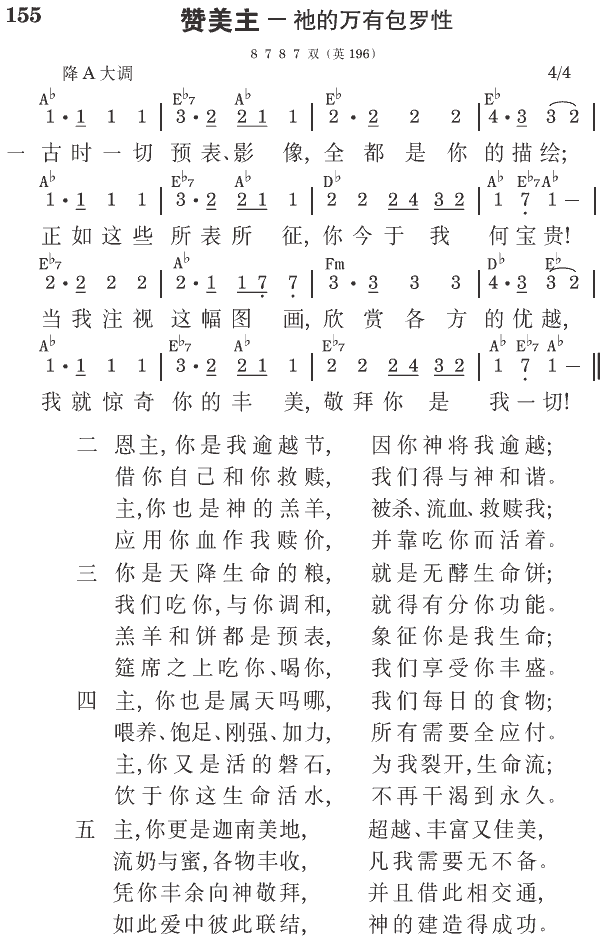

诗12:6 耶和华的言语，是纯净的言语，如同地上炉中炼过的银子，精炼过七次。
诗119:140 你的话极其精炼，为你的仆人所爱。
创世记：神创造，撒但败坏，人堕落，耶和华应许拯救
出埃及记：基督是神子民的救赎、拯救和供应，也是他们敬拜并事奉神的凭借，使他们在祂里面与神建造在一起，而得与神相见，彼此交通，互为居所
利未记：基督是蒙神救赎的人在交通、事奉和生活上的一切
民数记：基督是神子民的生活意义、见证、中心，以及他们行程和争战的领导、道路与目标
申命记：基督是神子民的指导者和领导者，使他们能进入属天的领域，并有分于祂的丰富
约书亚记：以色列人占有并得着美地为业，以完成神的经纶
士师记：以色列离弃神，遭仇敌击败，渐渐腐败
路得记：一幅完整的表号，说到外邦的罪人，借着基督的救赎而与基督联结，与神的选民以色列同被带进神圣的产业
撒母耳记上、下：享受神所赐美地之路的例证
列王纪上、下：神在祂的经纶中，在行政上对付地上神圣君王职分因列王所受的破坏与毁坏，以及神公正对付的悲惨结果
历代志上、下：神在人历史中行动的全部纪事，从亚当经过撒母耳到以色列被掳归回，连同神对付犹大诸王一些重要细节的陈述
以斯拉记：以色列人从被掳中归回，重建神的殿，开始神选民中间照着神的经纶，为着神在地上见证的恢复
尼希米记：重建耶路撒冷的城墙，继续神选民中间祂见证的恢复，以完成祂的经纶
以斯帖记：拣选以色列人作选民的这位神，在他们被掳到外邦列国中的期间，对他们成了隐藏的神，借着在隐密中行事，秘密的照顾他们，并公开的拯救他们
约伯记：神对付祂圣民的目的
诗篇：寻求并接触神的敬虔之人，借着赞美、祷告、并欢腾的歌唱所表达的情绪、感觉、感想和经历
箴言：智慧的话，教导人如何行事为人，并在为人生活中建立他们的性格
传道书：所罗门的教训，给人看见败坏世界里的人生，都是虚空，都是捕风
雅歌：一个绝佳婚姻里爱的历史，启示出个别信徒与基督爱的交通中进展的经历
以赛亚书：耶和华借着成为肉体、钉死十架、复活、升天、并再来的基督所施的救恩
耶利米书：基督在神对付以色列与列国时，成为耶和华对神选民的义，作他们的中心和圆周
耶利米哀歌：耶利米对神的圣城和圣民之忧伤与爱的发表
以西结书：神在荣耀里向人显现，审判自己的百姓和列国，并恢复祂的选民，为着建造一个居所，作相互的住处，并作祂自己完全的彰显
但以理书：神截定给以色列的定命，就是七十个七的内容
何西阿书：耶和华是邪淫背道之以色列的救恩，接纳她回来并复兴她
约珥书：人类政权对以色列四个阶段的残害以及基督对残害者的毁坏，并祂在复兴时在以色列中间的掌权
阿摩司书：耶和华对以色列并四围列国的审判以及所产生的复兴
俄巴底亚书：耶和华对以扫的对付以及雅各为着耶和华国度的胜利
约拿书：耶和华的救恩甚至临到外邦人的城尼尼微
弥迦书：耶和华对以色列的责备，以及祂赐给以色列的复兴
那鸿书：耶和华对邪恶亚述之京城尼尼微的审判
哈巴谷书：神先借着迦勒底人对以色列施行公义的审判，然后又借着列国对迦勒底人施行公义的审判
西番雅书：耶和华对以色列和列国的审判，以及祂对外邦和以色列的拯救
哈该书：耶和华对付被掳归回的人，以建造祂的殿
撒迦利亚书：耶和华借着基督的救赎，对祂受管教的选民热切的安慰和应许；基督亲受屈辱，在他们被掳中作他们受苦的同伴
玛拉基书：耶和华对利未子孙（在以色列中间的祭司）和雅各子孙（以色列人）的对付
参读：旧约圣经恢复本。
